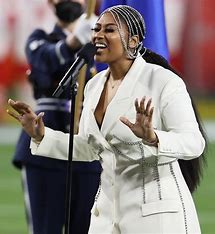
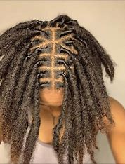
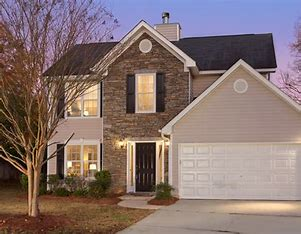

Singing
My favorite hobby is to sing. I have been singing since I was 5, when I got the lead for our kindergarten graduation song. As I got older I was asked to sing at my middle school graduation, friends birthdays and family weddings.
Some of my favorite singers are: 
- Fantasia
- Jazmine Sullivan
- Ari Lenox
Hair Styling
Hair styling is one of those hobbies that started because of my interest in my mothers work. My mom has been a hairstylist for ove 25 years. My interest began while I was young, because I would go to work with her and see the different styles she would give her clients.
These days I stick to Locs, natural hair and weaves for close friends and family. There was a time when I wanted to be hairstylist fulltime, but there are 3 things you need to be successful that I just don't have:
{kind=link}
{kind=link}
Real Estate
My newwest interest is real estate. I would like to become a real estate investor in the future. As someone who moved a lot as a child the idea of owning properties has always intrigued me. It is also a way to build generational wealth and if I have an opportunity to set those who come after me up well I will at least give it a try.
When I was looking into it I realized there are many way to enter the real estate game, but the one that stuck out to me most was real estate wholesaling. This way I could get into real estate without have to put thousands of dollars down to obtain a property and allows you to meet the real estate players in your area to gain knowledge and build relationships with people who may be able to help you in the future.